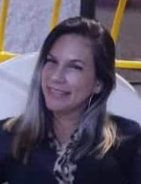
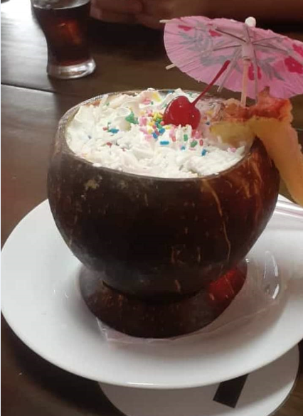
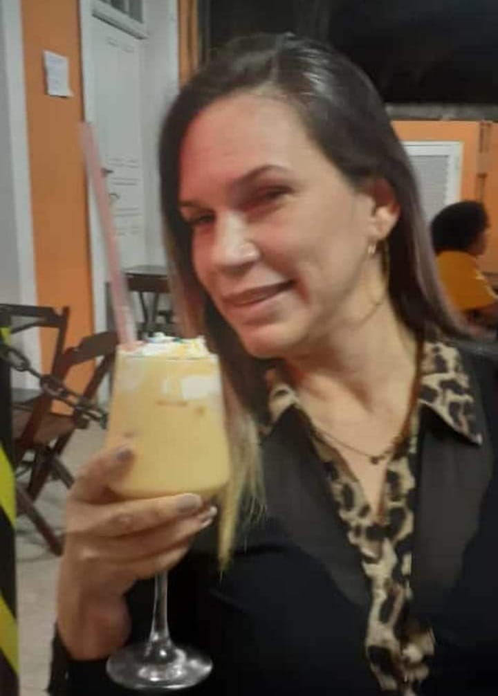
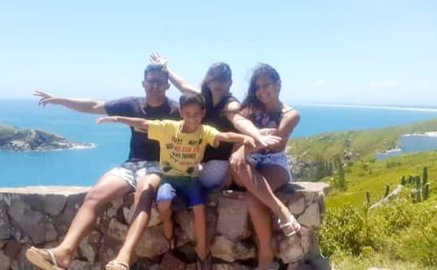

Meu Primeiro PORTAFOLIO (HTML-CSS)
Apresentaçao
Olá! Eu sou Gladis Contreras!!
Estou iniciando no mundo da programação vamos conhecer um pouco mais
sobre mim!!

Minha historia
Nasci em 10 de Janeiro de 1978, na Venezuela, na cidade de San Felix,
Estado Bolívar, filha única de 8 irmaos homens, sendo meu pai motorista
e minha mãe enfermeira, Posso dizer que minha infância foi muito feliz e
muito mimada por todos os meus parentes,terminei o ensino médio em 1995.
Comecei meus estudos em Engenharia Industrial em 1996, quando tinha 18
anos e tive meu primeiro filho no mesmo ano
Minhas experiencias
Trabalhei como recepcionista em uma clínica particular enquanto estudava
por 4 anos, depois fui fazer meus estágios baseados na atualização de
custos e reengenharia de um processo produtivo de uma empresa que
produzia ânodos de carbono, depois fui trabalhar como auxiliar
administrativo no Departamento de Engenharia de uma empresa
metalmecânica onde também fui treinado como auditor interno de qualidade
para manter as certificações das normas iso9001, depois fui trabalhar
como coordenadora de processos em outra empresa metalmecânica onde
fiquei apenas 3 meses , pois surgiu uma nova oportunidade em uma
mineradora como analista de planejamento e controle, este cargo abrangeu
os controles e acompanhamento de custos, compras, controle de qualidade
e processo produtivo, análise estatística, até a elaboraçao das
certificaçoes de qualidade dos productos vendidos
Meus Gostos
Amo passear, ir à praia, curtir o ar livre, boa comida, boa bebida, boa
companhia, me vestir bem, dançar, ouvir música, assistir filmes, curtir
o tempo em família, e por que não? passar um dia inteiro de folga dorme



Novas Oportunidades
Para o ano de 2019 resolvi buscar novos horizontes e vim morar no
Brasil, em 2020 foi o início da Pandemia que levou muita gente a
reinvestir e sugeriu novas oportunidades e busca de emprego a partir daí
surgiu a oportunidade de se candidatar ao curso com a organização Toti
iniciando minha formação como Desenvolvedor Frontend, com apoio do
Instituto Nubank
Minha frase
"Cada dia tem um novo despertar pois cada começo representa uma nova
oportunidade para recomeça"
Meus objetivos
Me capacitar para me tornar um desenvolvedor frontend e fazer desta nova
oportunidade um novo começo de trabalho, fazer páginas web, fazer
projetos para ampliar meus conhecimentos e obter mais experiências que
me levem a executar outras formas de programação.